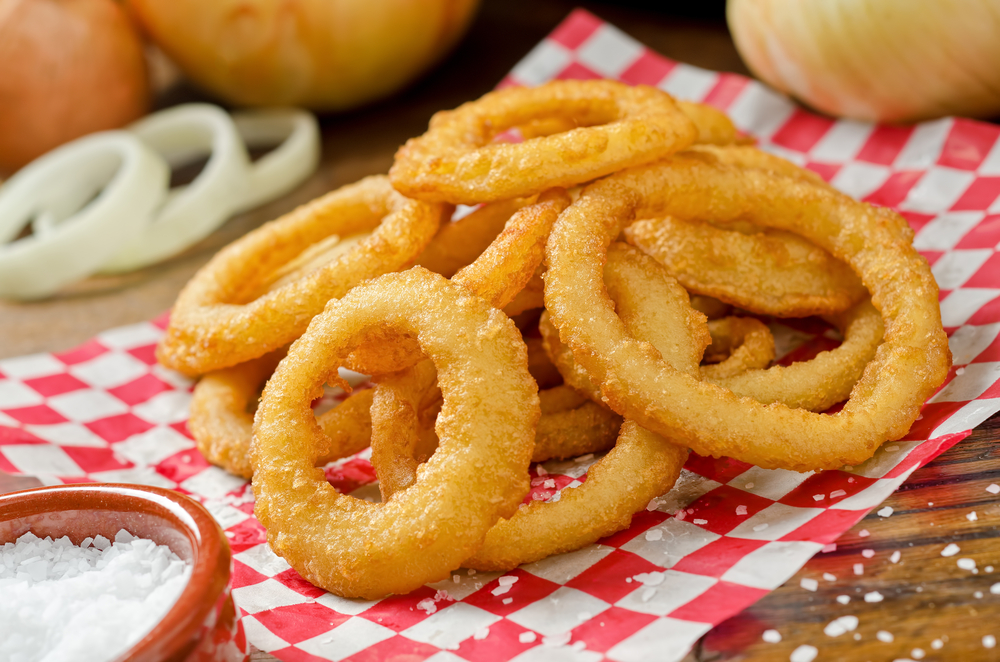

Beer Battered Onion Rings

Description
This is a recipe for beer-battered onion rings.
A pleasant but greasy fried food the total prep to end product is not too long,
so this is more than perfect for a quick snack.
Ingredients
- 2 cups all-purpose flour
- 1 egg, beaten
- 2 teaspoons dried parsley
- 2 teaspoons garlic powder
- 2 teaspoons dried oregano
- 1 cup beer
- 3 large onions, sliced into rings
- 1 cup oil for frying
- salt and pepper to taste
Steps
-
In a shallow bowl combine flour, egg, parsley, garlic powder, oregano,
salt and pepper. Gradually add beer, stirring, until a thick batter forms.
Add more or less beer depending on the desired consistency of the batter.
-
In a heavy frying pan heat oil
(adjust amount, depending on the size of your pan, so that you have a couple of inches of oil) over medium-high heat.
When oil is hot, dip onions in batter and fry, turning once to brown evenly on both sides. Drain on paper towels.